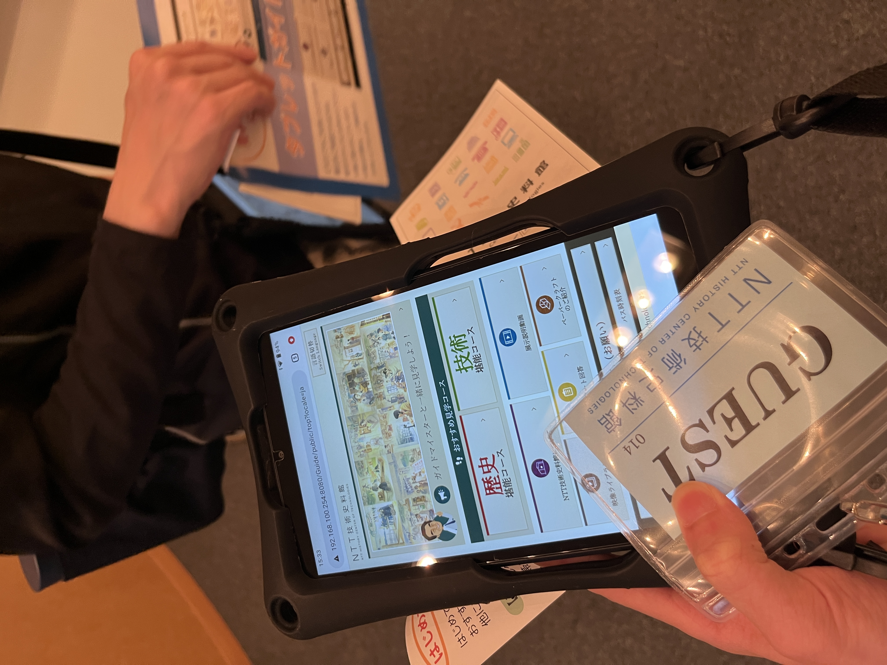
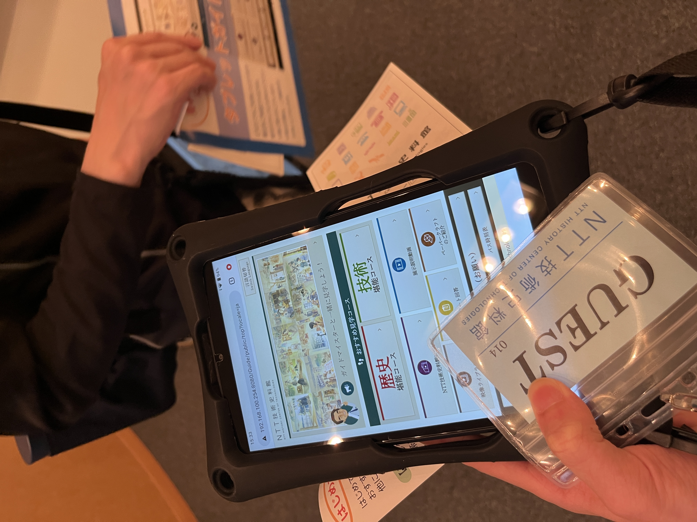
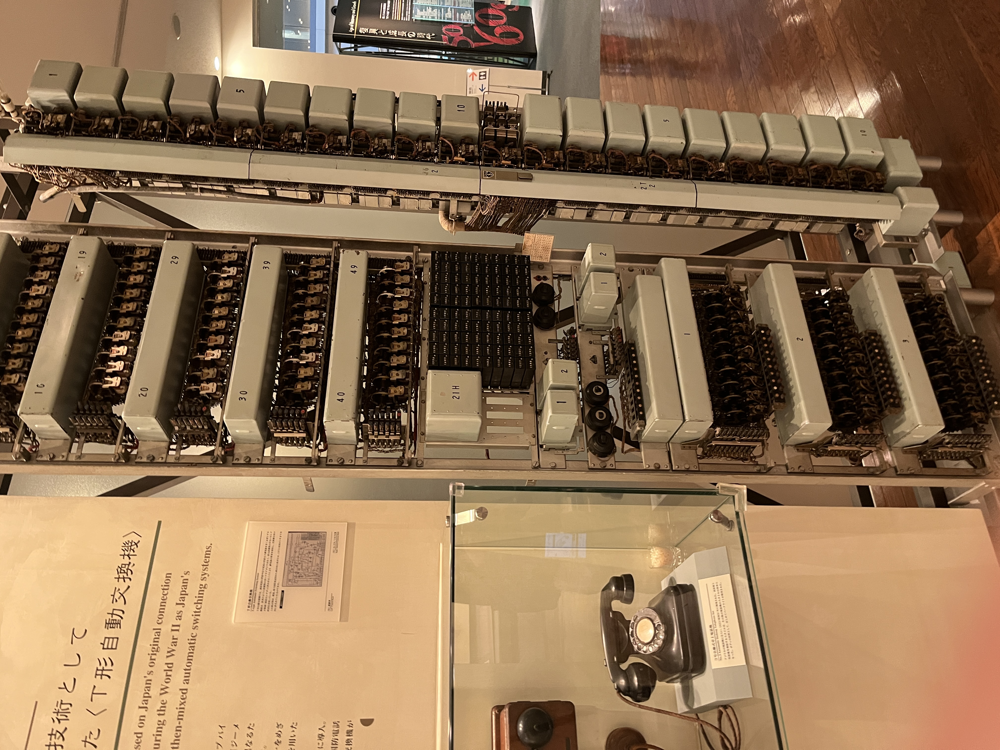
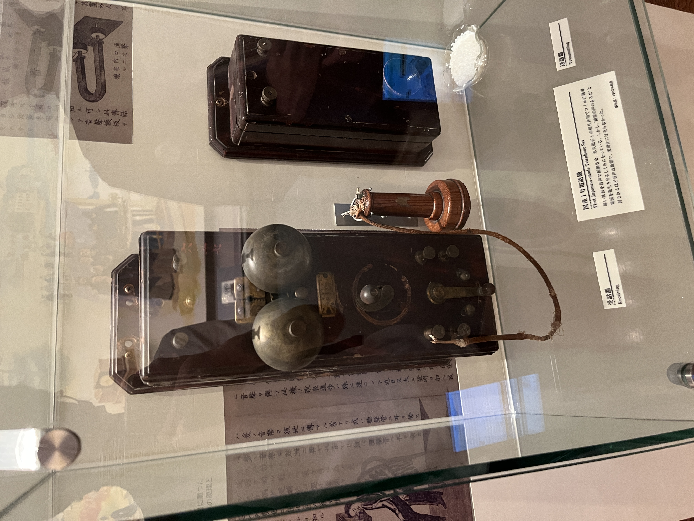
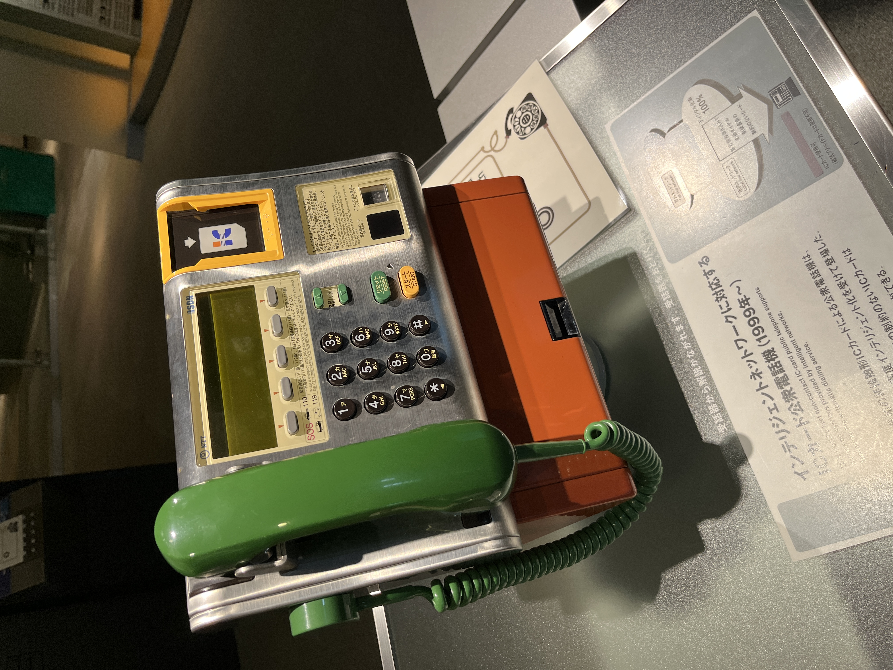
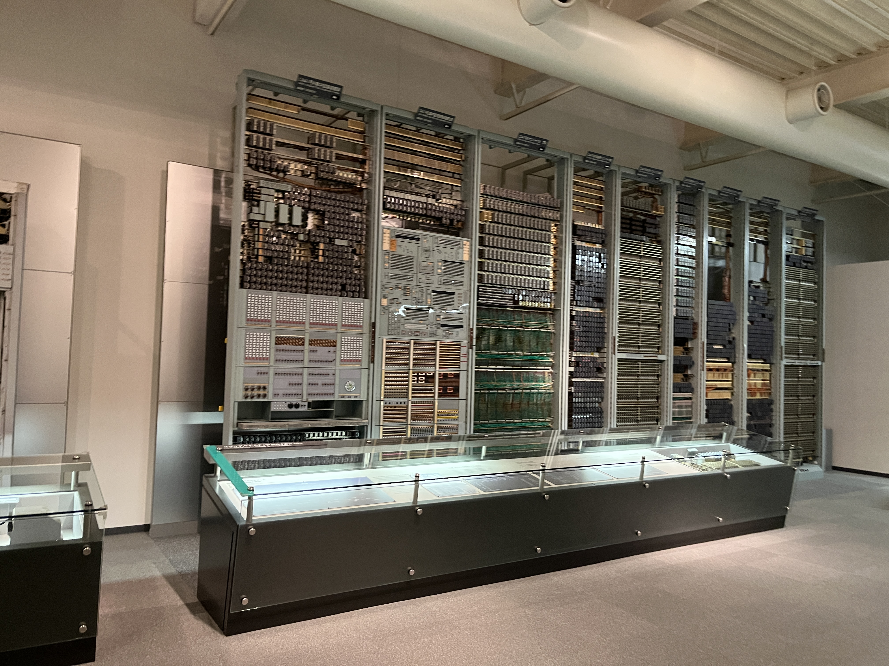
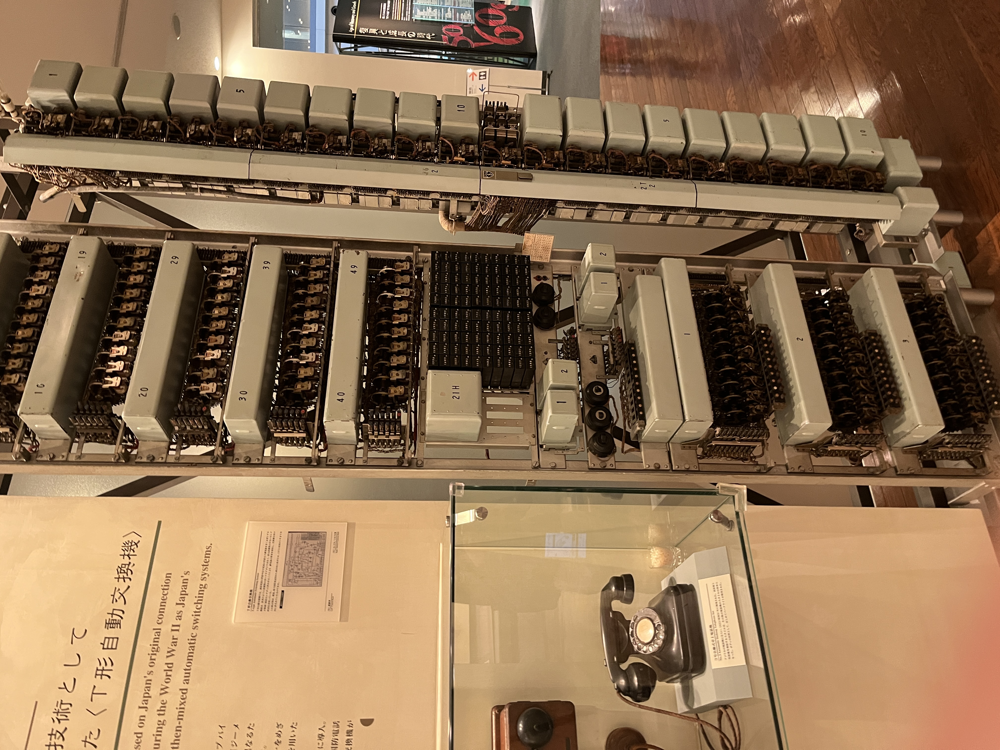
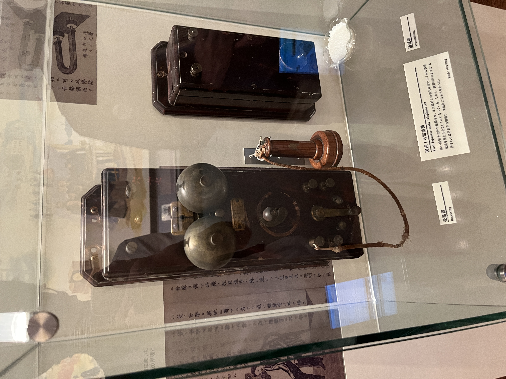
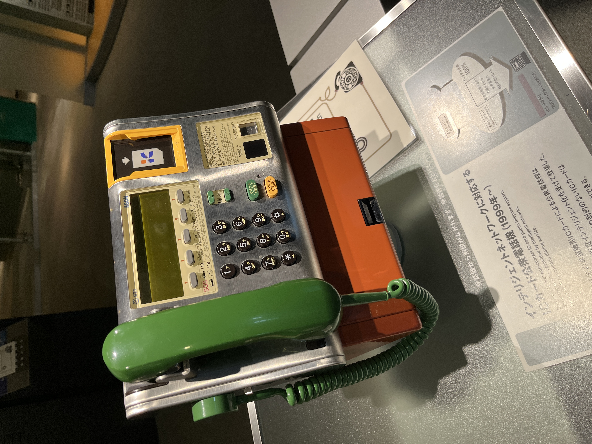
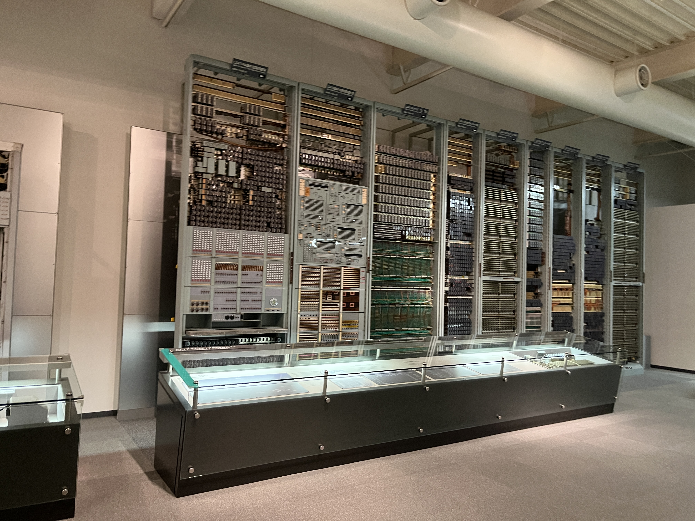

NTT技術資料館は木曜日と金曜日しか公開していない事から行きたくてもなかなか行けないでいたが、ようやく都合が付き行く事ができ、普段は見れないような電話機や電話交換機とその歴史に関する展示を見れるのだが、この展示のクオリティが非常に高くとても楽しめた。
アクセスがあまり良くない点や一般公開日が木曜と金曜しかなかったりして大変ではあるが、電話が好きだったり、興味があって行った事がないのなら是非行ってみる事をお勧めする。この分野が好きな人ならきっと有意義な時間になるだろう。
そこそこ時間を作って行ったつもりだったのだが時間が足りず、全ての展示をじっくり見れたわけではないので、今度は人を誘わずに一人でもう一度行きたいものですな。
 






